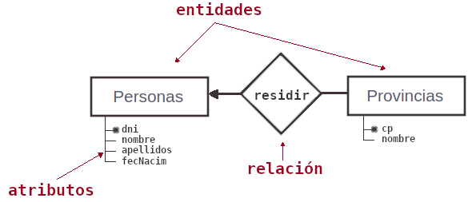
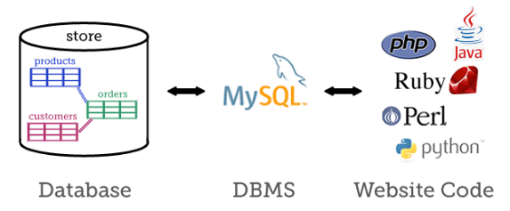

Problemas con los ficheros de registros
Cuando tomamos muchos datos para crear un fichero podemos provocar ciertos errores que nos genere datos inconsistentes. Esas inconsistencias son las que nos justificar el diseño de las Bases de Datos.
Veamos un ejemplo, aquí tienes un CSV con 100 registros.
- ¿Cuántos registros hay de Madrid?
- ¿Cuántos hay con código postal 28?
- Aquí tienes otro fichero. ¿Podrías contestar a las mismas preguntas?
Redundancias, inconsistencias e incongruencias
En un fichero como el anterior podemos encontrar los siguientes defectos en una toma de datos:
Redundancia: Repetición innecesaria de los datos.
Podemos hablar de dos tipos de redundancia:
- Redundancia por repetición: Santa Cruz de Tenerife, Santa Cruz de Tenerife, Santa Cruz de Tenerife, ...
- Redundancia por dependencia: 28, Madrid, 28, Madrid, 28, Madrid, ... : 28 y Madrid es "lo mismo": bastaría anotarlo una sola vez.
Fácilmente podemos observar que la redundancia por repetición puede provocar una ocupación exagerada de recursos (memoria, disco, ...).
La redundancia ya en sí es mala, pero tenemos un problema mayor: la inconsistencia.
Inconsistencia: Se produce en situaciones de inconsistencia de datos cuando no todas las copias redundantes proporcionan la misma información.
Por ejemplo, escribir:
- S.C. de Tenerife; Tenerife; Santa Croz de Tenerife; Tenirife; ...
- 28, Madrid; 38, Madrid; 28, Madrid; ...
En la primera situación, se nos obliga a realizar búsquedas más complejas para encontrar a todos los clientes de Tenerife.
La redundancia por dependencia es mucho peor, pues producen datos incongruentes. No tengo suficiente información para saber si la respuesta correcta era "38, Santa Cruz de Tenerife" o "28, Madrid".
Incongruencia: Existe una relación absurda o no lógica entre dos datos. Son datos contradictorios.
Problemas con los ficheros de registros
- Redundancia de datos (duplicidad innecesaria de información).
- Mal aprovechamiento del espacio de almacenamiento.
- Aumento en el tiempo de proceso.
- Inconsistencia de información debida a la redundancia (si un dato cambiaba en el fichero de una aplicación, no cambiaba en los demás).
- Aislamiento de la información (imposibilidad de transferirla a otros programas a no ser que se desarrollara un software de migración específico).
Relaciones
Una Bases de datos es un almacen de grandes cantidades de datos, organizados de tal manera que no se encuentren inconsistencias (ni redundancias).
¿Cómo podríamos convertir nuestro fichero en una "Base de Datos"?
Una solución podría ser crear dos ficheros, uno para las provincias y el otro para las personas:
Personas = { DNI, fecNac, apellidos, nombre, cp }
Provincias = { cp, nombreProv }
Estos dos ficheros estarían relacionados por el código postal:
DNI ··· nombre cp <--- R ---- cp nombreProv 56595X ··· Pedro 03 01 Álava 9985A ··· Juan 24 02 Albacete 92012J ··· Mateo 24 03 Alicante 56900R ··· Lucas 24 04 Almería 15126T ··· Jesús 24 ... 93396A ··· Ana 33 09 Burgos 70155W ··· Maria 47 ... 39544M ··· Marta 28 24 León 43406F ··· Sandra 24 ... 54755L ··· Elena 09 52 Melilla 97831L ··· Teresa 44 25665K ··· Alfonso 01
Observar que en la tabla de PERSONAS no hemos almacenado el nombre de la provincia, basta con guardar el "Código Postal", y consultando en la tabla de PROVINCIAS podemos conocer el nombre de la misma.
En una Bases de datos relacional se establecen relaciones de esta manera entre los ficheros de datos (tablas).
Diagrama Entidad Relación
Cuando dos ficheros se relacionan por un campo, podemos representarlos mediante el conocido como diagrama Entidad-Relación (E-R):

Para representar el diseño de nuestra BBDD emplearemos un diágrama E-R para representar la organización de los datos,
Sistema Gestor de Bases de Datos (SGBD)
El SGBD es la aplicación que se encargará de configurar una estructura óptima de almacenamiento en disco y nos permitrá los accesos a los datos:

SGBD: Sistema Gestor de la Base de Datos DBMS: Data Base Management System
Para que el SGBD funciones de manera óptima sobre los datos, la BBDD debe estar bien diseñada.
Para minimizar la información redundante, y evitar inconsistencias en los ficheros, se
definió un proceso de normalización
a traves de ciertas reglas que deberán cumplir todas las BBDD para estar bien diseñadas.